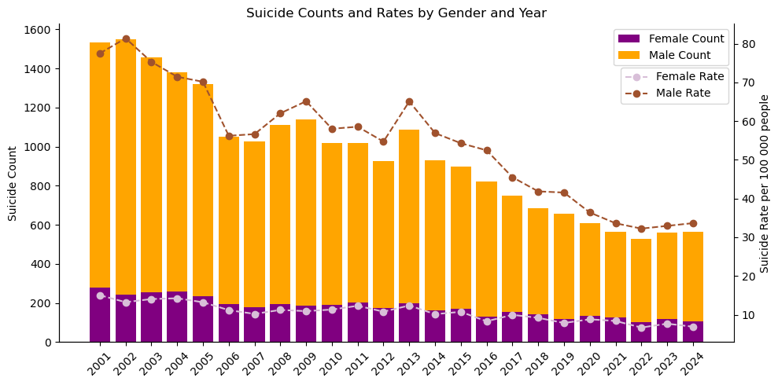

Suicide Statistics of Lithuania
Exploratory data analysis of Lithuania's suicide counts and rates from 2001 to 2024.
Overview
The following analysis examines suicide statistics in Lithuania from 2001 to 2024. The data was sourced from the Lithuanian Institute of Hygiene (HI) database. This dataset includes annual counts and rates of suicides overall, as well as broken down by gender. The aim of this analysis is to explore trends over time, focusing on changes in suicide counts and rates among both males and females.
Key Highlights
Over the past two decades (from 2001 to 2024), suicide rates in Lithuania have declined significantly for both men and women. This downward trend is particularly pronounced among males, who historically have had disproportionately higher suicide rates.
- Male suicide rate fell dramatically: from the highest count of 1551 (with rate 81.38 per 100000 habitants) in 2002 to 527 (with rate 32.24 per 100000 habitants) in 2022.
- Female suicide rate also declined: from the highest count of 278 (with rate 15.04 per 100000 habitants) in 2001 to 101 (with rate 6.69 per 100000 habitants) in 2022.

Figure 1: Suicide Counts and Rates by Gender and Year.